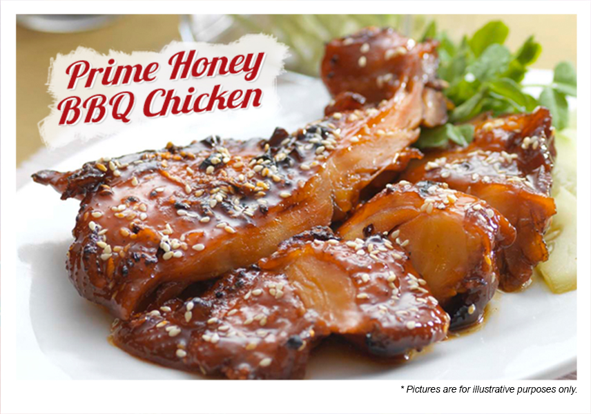
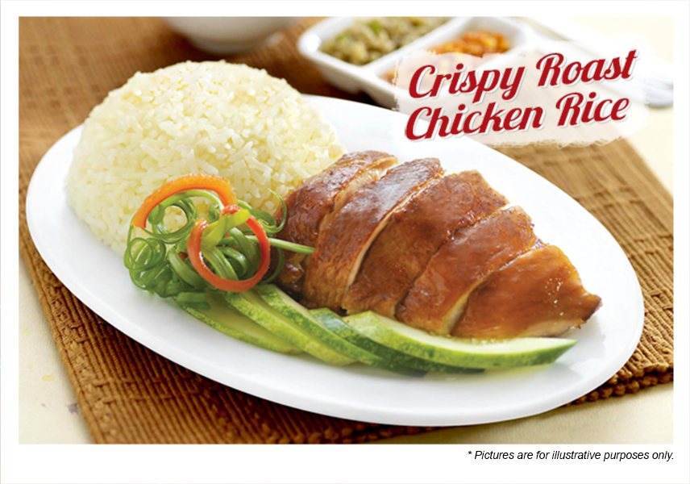
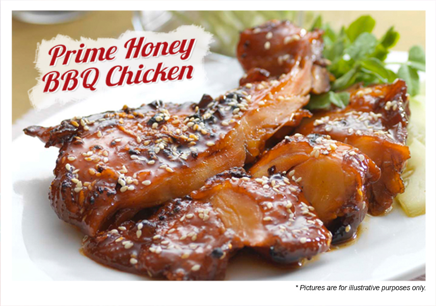
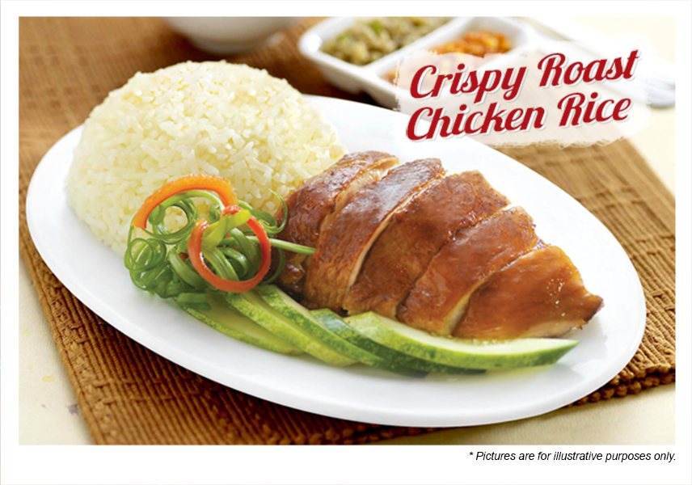

Exuding a warm, cosy and rustic ambience
Inspired by grandmother's traditional secret recipe and maternal grandmother's treasured recipes, the best of both grandmothers' recipes were perfected and introduced into the menu and served specially for you. We need food everyday, but have you ever wondered how many kinds of food you are eating? There are a lot of food we have not tried. We collected 225 common foods, this page shows 6 random kinds of food each time by default, when you want to change the taste but do not know what to eat, this tool may be able to help you.t the same time you can also generate food, just specify the generated number. We added a small feature, click the food text with the mouse, it will automatically select the appropriate text, this is a convenient copy tool.
From our traditional, elegant and rustic setting to our perfectly prepared meal, we have introduced layers of perfection and attention to details that allow pleasant dinner for all of our guests.Hainanese chicken rice. The Hainanese chicken rice is a dish that consists of succulent steamed white chicken cut into bite-size pieces and served on fragrant rice with some light soy sauce. The dish is topped with sprigs of coriander leaf and sesame oil, and accompanied by a garlic-chilli dip.Hainanese chicken rice is a dish of poached chicken and seasoned rice, served with chili sauce and garnishes. It was created by immigrants from Hainan province in southern China and adapted from the Hainanese dish Wenchang chicken. It is considered one of the national dishes of Singapore and is most commonly associated with Singaporean cuisine but is also seen throughout Southeast Asia, particularly Malaysia where it is a culinary staple.Salt steaks 45 minutes before you sear them. Most people know that steakhouses slather their steak in salt to get that charred, crusty exterior that seals in all the juices and flavor, but give yourself enough time for it to properly set. "Besides the salt adding flavor, it draws moisture, which causes the salt to dissolve," Old Homestead Steakhouse executive chef Martinez told Business Insider. "Letting the salted steaks sit for at least 45 minutes allows the moisture to return into the meat. The salt makes a sumptuous crust on the exterior when it hits the grill."
 


